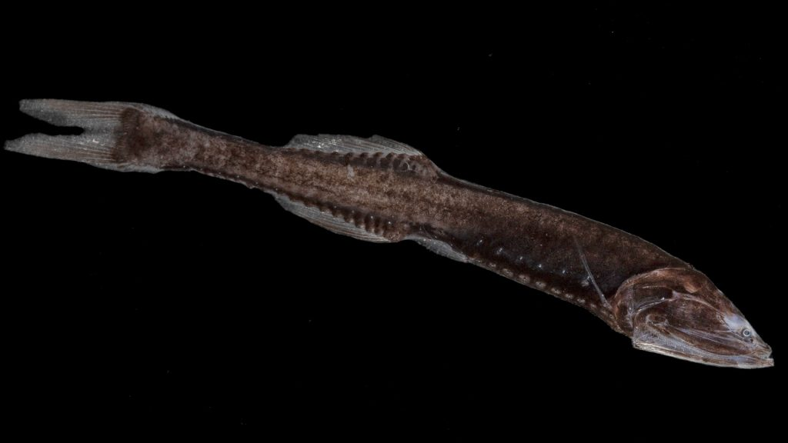
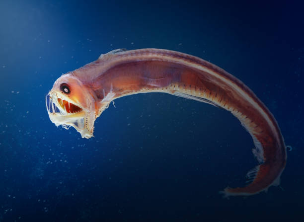
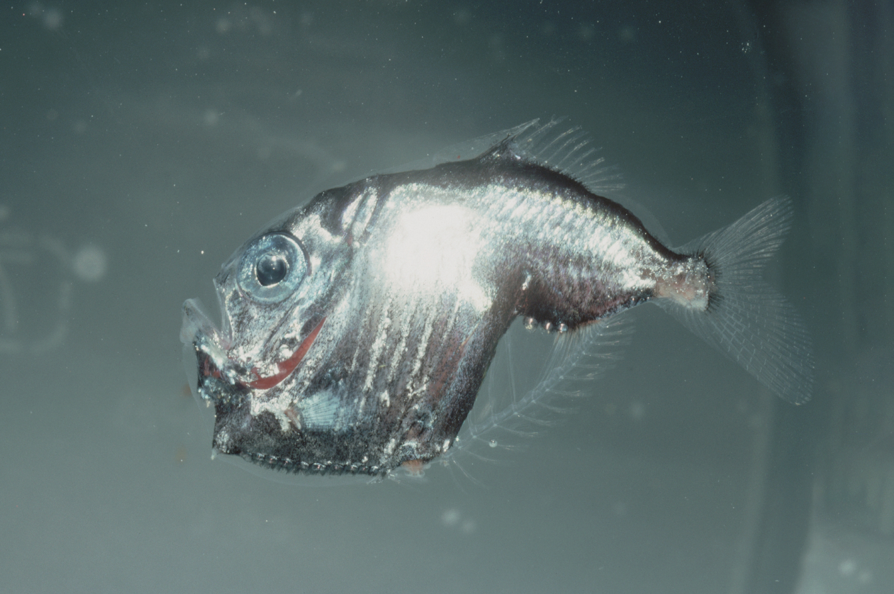
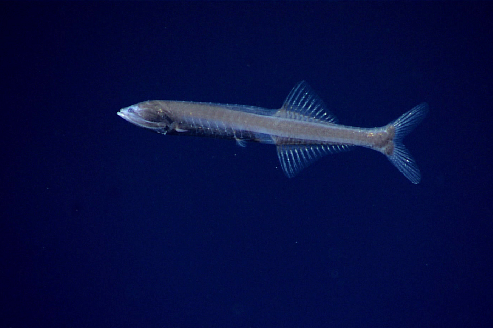

Marine Species in Twilight Zone

Lanternfish
Salah satu ikan paling melimpah di Twilight Zone, memiliki tubuh bercahaya (bioluminesensi).

Bristlemouth
Dikenal sebagai hewan vertebrata paling banyak di bumi, hidup di kedalaman temaram.

Viperfish
Memiliki gigi besar dan menghasilkan cahaya untuk menarik mangsa di kegelapan.

Hatchetfish
Bentuk tubuh pipih seperti kapak dan memiliki organ cahaya untuk kamuflase.

Snipe Eel
Ikan kurus panjang dengan rahang melengkung untuk menangkap mangsa kecil.

Cyclothone
Ikan kecil sangat gelap yang mendominasi biomassa Twilight Zone di seluruh dunia.